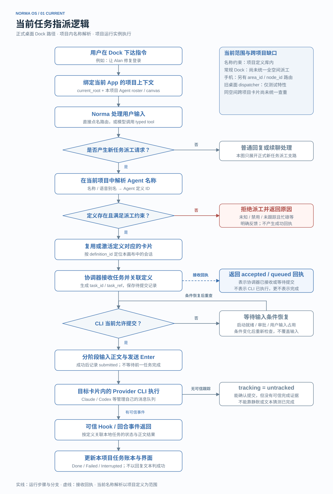
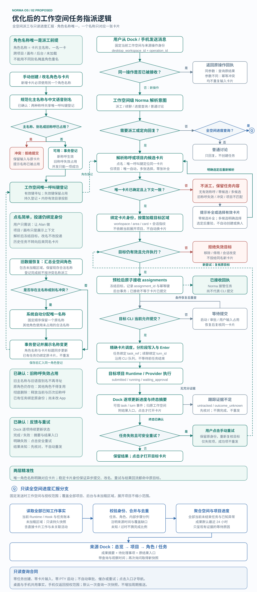

一个工作空间，精准派工与完整汇报。
展开项目提供上下文。Norma 面向整个当前工作空间，点名具体卡片执行，也能汇报全部已知工作的进展。
一名一卡 · 全空间查重旧称呼失效 · 保留占用按证据反馈 · 点击才导航进度查询只读 · 不触发派工
执行目标从“项目内定义”变为“空间内唯一卡片”
全空间进度汇报走独立查询分支，复用派工形成的任务事实。
CURRENT · 正式桌面 Dock当前：以项目为边界
此处展示常规桌面入口；手机已有独立的区域寻址与活动汇总。
- 1
用户在 Dock 发送指令使用当前项目的名单与画布上下文。
- 2
解析项目内名称或语音别名找到 Agent 定义；空间内跨项目名称尚未统一查重。
- 3
复用或激活定义对应的卡片以定义关联本画布会话，不能完整表达跨区域实例。
- 4
协调器接收，等待 CLI 提交条件启动、审批与用户输入占用决定何时提交。
- 5
写入正文并发送 EnterCLI 管理自己的消息队列；提交不代表完成。
- 6
可信事件更新本项目任务与界面普通文本回复或 CLI 静默不作为完成证据。
缺口：常规 Dock 缺少统一的全空间寻址、实例级协调与主动进度汇报。
PROPOSED · 当前工作空间优化：一名一卡，身份贯穿执行
目录包含全部项目、画布、后台、未加载和仍保留的角色。
- 1
固定来源工作空间，区分意图讨论只回复；进度查询只读；派工或续聊进入执行路径。
汇报进度 → 聚合现有事实 → 返回带时间与范围的快照
- 2
有效主名称／别名指向唯一卡片旧称呼失效占用；仅指定项目则统计完整候选。
- 3
绑定稳定身份，按需加载并复核改名不换目标；删除或会话替换不能改投同名卡片。
- 4
整组预检、原子接收、逐项投递沿用 CLI 队列；多目标各自保留状态与结果。
- 5
同一任务的可信事件回流来源空间区分已接收、等待提交、已提交、运行与终态。
- 6
Dock 显示摘要与结果入口点击才导航；安全失败手动重试，未知先核对。
精准性来自两层：唯一名称确定卡片，稳定身份确保执行与结果始终归原目标。
查看两张完整运行流程图
当前任务指派逻辑 · 打开原图
优化后的逻辑，含 Q 汇报分支 · 打开原图
试一试：一个称呼，只命中一张卡片
选择典型场景，再输入主名称或中文语音别名。这里的解析与卡片均为本地示例。
名称解析与目标确定
- 主名称与中文语音别名共同查重Alan／艾伦对应同一卡片；英文忽略大小写，Norma 保留。
- 改名让历次旧称呼失效并保留占用原角色仍存在时，其他角色不能复用；彻底删除成功后才释放。
- 无有效称呼时，保留任务并补全选择前零接收、零创建、零提交；不猜名字，不自动找替代。
- 只指定项目时，统计完整候选一张自动选中，多张由用户选，零张提示补全；后台与未加载都计入。
同职责、模型和技能可以复用。具名角色与卡片身份不能共用；旧任务也不会转投同名新角色。
“汇报整个工作空间的进度”
正在查看 Web，也能看到 API 与工具项目。示例同时包含后台任务、未加载快照和未关联活动。